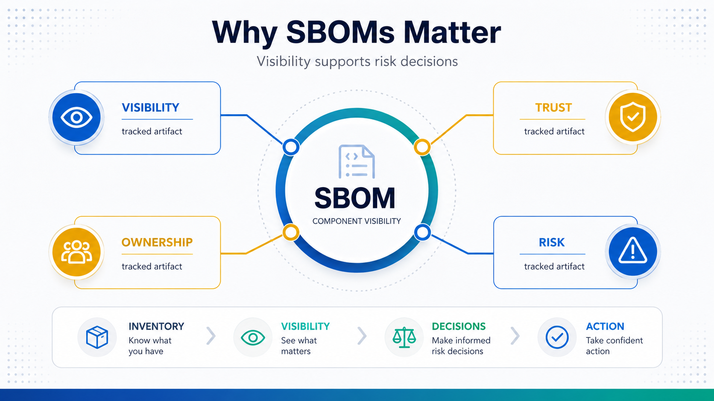

What Is SBOM?
Why Organizations Use SBOMs
Connecting to LMS... Progress: in progress
Version 1.0 | Date: 2026-06-16 | Educational overview of Software Bill of Materials concepts.

Narration
Organizations use SBOMs because software supply chains are difficult to see clearly. Modern applications often include many open-source libraries, third-party packages, frameworks, vendor components, and nested dependencies.
Visibility matters because organizations cannot manage what they do not understand. If a widely used component has a serious vulnerability, teams need to know whether that component appears in their products and where it is deployed.
SBOMs also support risk management. They help teams identify software dependencies, understand exposure, prioritize remediation, respond to customer questions, and make better decisions about supplier and component risk.
For developers and engineers, SBOMs can make dependency conversations more concrete. Instead of guessing what a product contains, teams can review component versions, package sources, and dependency relationships.
For security teams, SBOMs provide a starting point for vulnerability matching, incident scoping, policy checks, and supply chain review. They do not replace analysis, but they make the analysis more targeted.
For business leaders, SBOMs support trust and resilience. Customers, regulators, and procurement teams increasingly ask how organizations understand and manage the software they rely on.
The strongest SBOM programs treat inventory as an operational capability. They generate, store, update, and use SBOMs as part of normal software lifecycle and risk management work.
This makes SBOM work less reactive. Instead of creating component lists only when a customer or incident demands them, organizations can maintain current software composition data and use it whenever risk, procurement, or support questions arise.
It also helps teams set expectations. An SBOM is one source of truth for component visibility, but it works best when people understand how it is generated, how current it is, and what decisions it is meant to support.